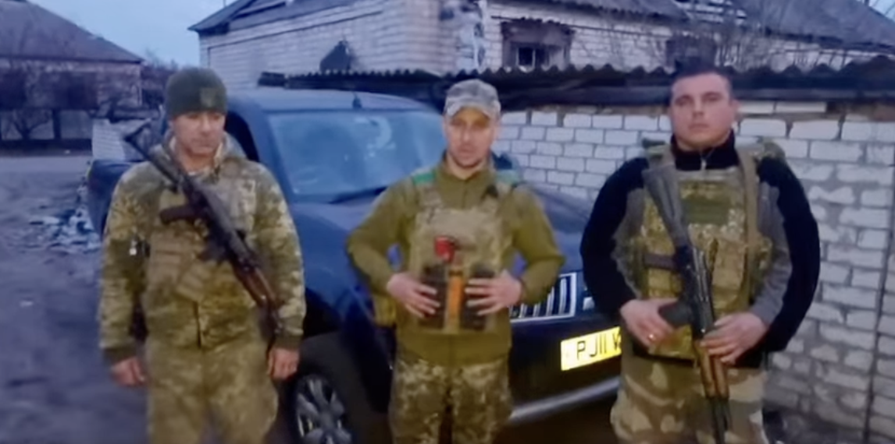
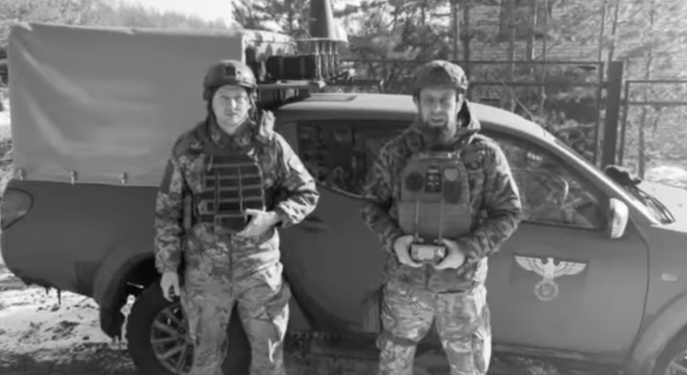
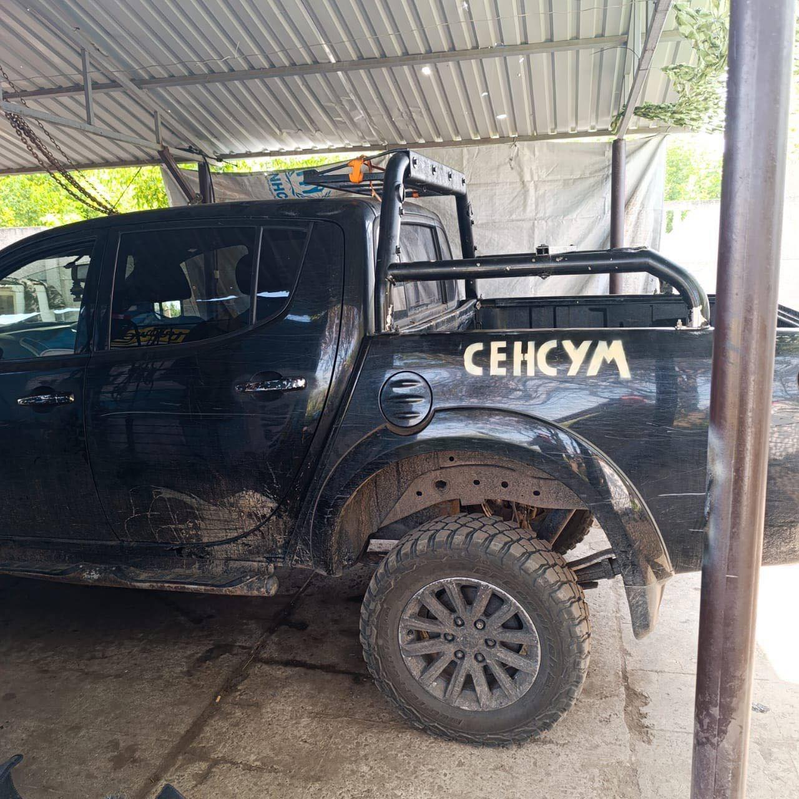
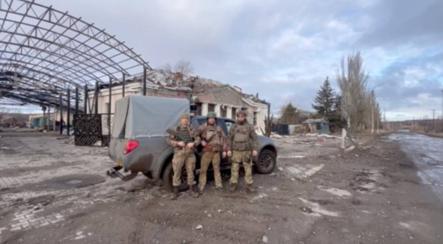
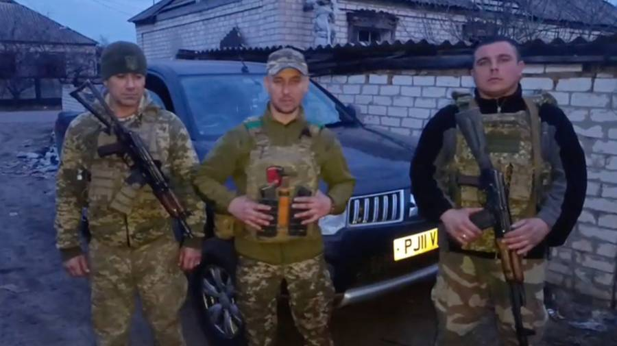
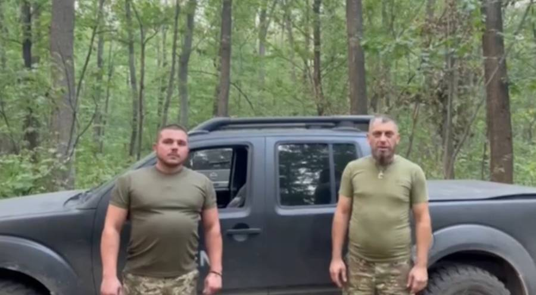

Флагманська партнерська лінія
1 рота 53 ОМБр
Три роки безперервної допомоги одній роті: від антидронових систем і транспорту до пікапів, гуми, дронів та ремонтів. За цією історією видно, як змінювались потреби підрозділу й сам характер війни.
13 передач2023-2025 період
Передова антидронова система
Автомобіль
Звіт про роботу переданих антидронових глушилок
Додаткові безпілотники для розвідки й коригування
Комплект топової гуми
Пікап
Серія авто та оновлення автопарку після втрат





